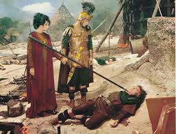
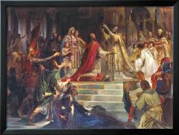
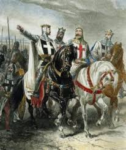
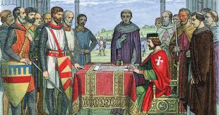
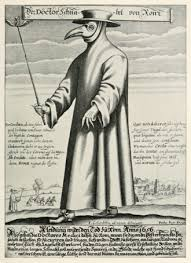
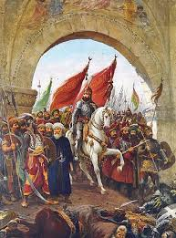

476
A Nyugatrómai Birodalom bukása Ez a középkor kezdete.

800
Nagy Károly császárrá koronázása A pápa császárrá koronázta Rómában, megerősítve a keresztény Európa egységét.

1096
Az első keresztes hadjárat kezdete Keresztény seregek indultak a Szentföldre.

1215
A Magna Carta kiadása Angliában korlátozták a király hatalmát, ami fontos lépés volt a jogállamiság felé.

1347
A pestis megjelenése Európában A fekete halál milliók életét követelte.

1453
Konstantinápoly eleste Az Oszmán Birodalom elfoglalta a várost, amely a középkor végét jelzi.